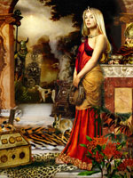

Немон або Немаін, Неметона, в кельтської міфології одна з найдавніших богинь. Дружина і супутниця бога Тевтат, покровителя військової і мирної діяльності кельтів, в галло-римський час бога війни і битв. За іншими джерелами була дружиною Нуаду, ватажка Племен богині Дану. Імовірно, в найдавніші часи Немон була покровителькою домашнього вогнища, верховною жрицею кельтських обрядів і богинею-захисницею громади кельтів. Надалі Немон шанувалася як одна з трьох богинь війни, що сіють розбрат і руйнування. Ототожнювалася з іншими богинями битв і боїв: Махою, Бадб і Морриган.
У міфології і релігії кельтів досі багато що залишається нез'ясованим, незважаючи на багатий археологічний і етнографічний матеріал, відкритий останнім часом. Велика частина кельтських богів є не тільки уособленням сил природи, а й втіленням якоїсь духовної стихії. Найвидніші фігури кельтського Олімпу - Тевтат, Тараніс і Езус. Перший з цієї тріади відповідає римському Марсу і носить іноді інші імена: Сегомона, Камула; дружиною цього зухвалого бога була богиня Немон. Тараніс відповідав римському Юпітеру, а Єзус - Меркурію.
Великим шануванням користувалися також боги Беленус і ОДМА. Беленус є сонячним богом, родинним римському Аполлону. Бог красномовства Oгма зображувався немічним дідом з простягнутими від мови золотими нитками до вух натовпу слухачів, з палицею в одній руці і луком в іншій. За величезну фізичну міць ОДМУ ототожнюють з грецьким Гераклом. У кельтів була ще маса другорядних божеств різних місцевостей, богинь-матерів, покровительок землеробства, що піклуються про людське благополуччя. Головні кельтські боги вимагали для свого примирення людської крові; їм в жертву приносили, звичайно, військовополонених або різного роду злодіїв і злочинців, але іноді і невинних.